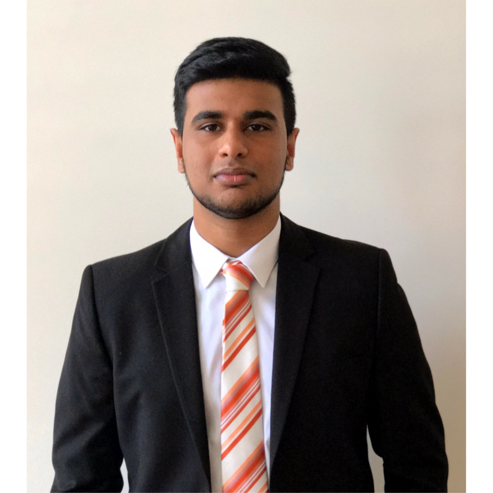
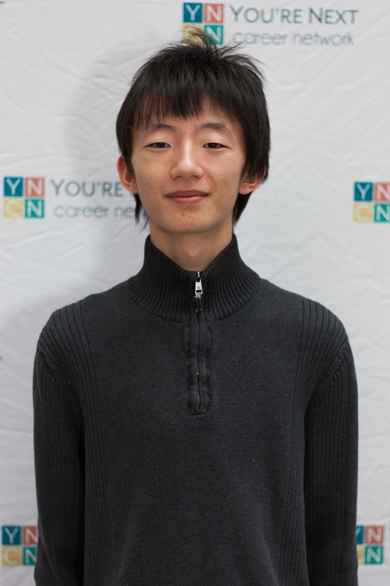
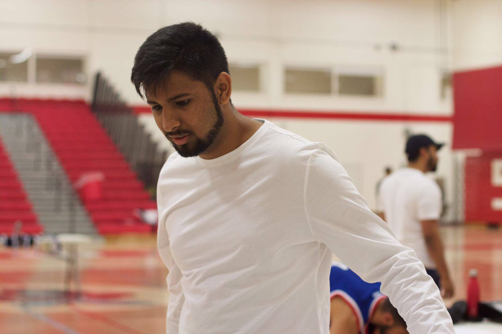

Yathan Vidyananthan

I am currently a third year Computer Science student, specializing in Software Engineering with a Minor in Statistics. I have had two co-op term experiences the first at Sun Life Financial as a Testing Specialist where I worked with web applications. And my second at CI Investments as a Unix Systems Administrator and Programmer analyst, where I worked with servers, backups/restores and scripts on SQR which I converted to python. With my current skills, knowledge, volunteer and current work experience in the technology and programming world including web programming, object oriented programming in C#, C, Java, Java Script, Python and knowledge with databases and in MS SQL Server, Sybase, MySQL I will benefit this team exceptionally.
Calvin Kar Tsun Chan
I am a fourth year Computer Science student in the Comprehensive Stream of the specialist program. I have experience using Java, Python, and C. I have done a couple of C-level courses that required teamwork therefore I already have experience working with teammates in a team environment and know what is required out of me. I had a part-time job during my full-time studies in university which gave me an understanding on managing my time and working in high pressure situations.
Jinming Zhang
 Currently a third-year computer science student specialist in software engineering. I got into coop this summer and hopefully will have my first work term in 2018 summer. Java is the first programming language I learned, then Python and C. For now, I would like to develop my programming skills as much as possible and willing to learn new languages that may be involved in this project. Also, I’ll try my best to contribute to the team.
Currently a third-year computer science student specialist in software engineering. I got into coop this summer and hopefully will have my first work term in 2018 summer. Java is the first programming language I learned, then Python and C. For now, I would like to develop my programming skills as much as possible and willing to learn new languages that may be involved in this project. Also, I’ll try my best to contribute to the team.
Linhai Yin

Currently working part time a the Ministry of Education doing DevOps with Microsoft Azure, and development in C#. At the same time I am doing a full time semester at the University of Toronto Scarborough working towards a specialist degree in computer science. I have plenty of experience working with Java, Python, Html, Javascript, CSS, C, C#, and have expressed interest and worked with many other languages and frameworks such as golang, SQL, C++, nginx, and Django.
Muhammed Shoab Mamdani

I am a fourth year student in the Management program with a specialist in Information Technology. I have experience in Java, C, Python, HTML, CSS, as well as knowledge in marketing, economics, statistics, human resources and other business related streams. I am a self made entrepreneur that runs a successful basketball league with several thousand weekly interactions and has helped several other business to be extremely successful, including an esthetic spa with two locations and a web design and marketing firm that has grown dozens of small to medium sized busniesses to new heights. With my experience in both computer science and business, I will help this team to develop a product that will exceed the expectations of the client.